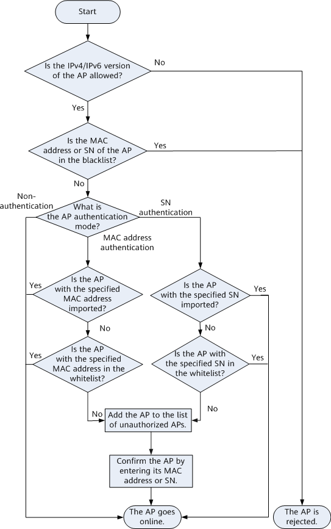

IP Address Allocation for APs
An AP can go online in IPv4 or IPv6 mode, and the IPv4 mode takes precedence. CAPWAP tunnels support IPv4/IPv6 dual-stack, allowing a WAC to manage APs in IPv4 and IPv6 modes. IPv4 and IPv6 packets can be simultaneously encapsulated in CAPWAP tunnels for transmission.
An AP can obtain an IP address in either of the following modes:
- Static mode: A user logs in to the AP and manually configures its IP address.
- DHCP mode: The AP serves as a DHCP client and dynamically requests an IP address from a DHCP server on the network.
- The AP broadcasts a DHCP Discover message, which carries its own MAC address, requested parameter list, and broadcast flag bit.
- After receiving the DHCP Discover message, a DHCP server selects an available IP address from the address pool on the same network segment as the IP address of the interface receiving the DHCP Discover message, and then sends a DHCP Offer message carrying this IP address to the AP.
- The AP broadcasts a DHCP Request message to notify all DHCP servers of the IP address offered by a specific DHCP server. The unselected IP addresses offered by other DHCP servers are then free to be allocated to other clients.
- After receiving the DHCP Request message, the DHCP server replies with a DHCP ACK message, indicating that the IP address carried in the DHCP Request message is allocated to the AP.
- SLAAC mode: The AP obtains an IPv6 address through stateless address autoconfiguration (SLAAC).
In SLAAC mode, the prefix of a network address is obtained from a Router Advertisement (RA) message, and then an interface ID is automatically generated. The prefix and the generated interface ID together form an IPv6 address.
CAPWAP Tunnel Establishment
A WAC manages and controls APs through CAPWAP tunnels. For details about CAPWAP, see Understanding CAPWAP.
AP Access Control
The AP sends a Join Request packet to the WAC. After receiving the packet, the WAC then determines whether to allow the AP access and sends a Join Response packet to the AP. The Join Response packet carries the AP software upgrade mode and AP version information.
Figure 1 shows the AP access control process.
Figure 1 AP access control flowchart
AP Software Upgrade
The AP determines whether its system software version is the same as that specified on the WAC according to parameters in the received Join Response packet. If they are inconsistent, the AP starts to update the software version. This version upgrade mode is also called automatic upgrade.
After the software version is updated, the AP restarts and repeats steps 1 to 3.
Configuration Status Check
- After receiving the Configuration Status Request message, the WAC sends a Configuration Status Response message to the AP and delivers the initialization configuration to the AP. In this phase, the WAC does not actually deliver service configurations. Instead, it delivers service configurations only after the CAPWAP link is established.
- After receiving the Configuration Status Response message, the AP performs the initialization configuration based on the message content.
- After the initialization configuration is complete, the AP sends a Change State Event Request message carrying the radio status and configuration execution result to the WAC.
- After receiving the Change State Event Request message, the WAC sends a Change State Event Response message to the AP and updates AP information as required.
CAPWAP Tunnel Maintenance
To maintain the state of a CAPWAP tunnel, both ends of the tunnel periodically exchange different packets to detect tunnel connectivity.
- Keepalive packets for a CAPWAP data tunnel (on the UDP port 5247)
- Echo packets for a CAPWAP control tunnel (on the UDP port 5246)
WAC Service Configuration Delivery
The WAC sends a Configuration Update Request packet to an AP, which then replies with a Configuration Update Response packet. The WAC then delivers service configuration to the AP.